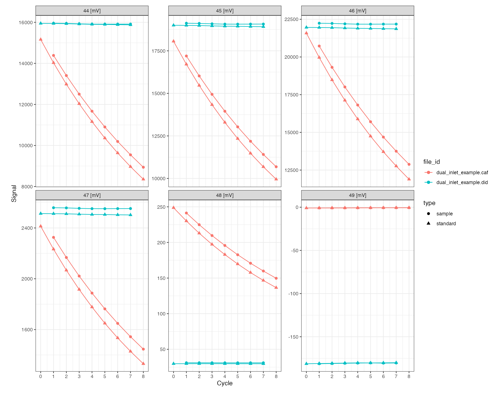
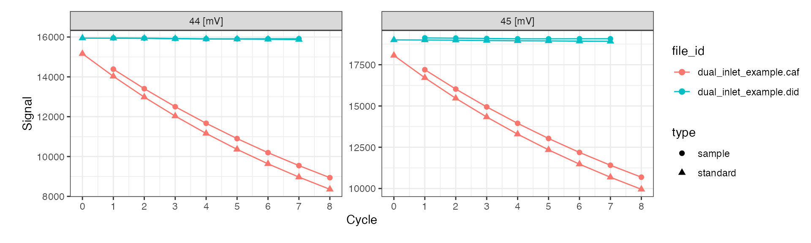
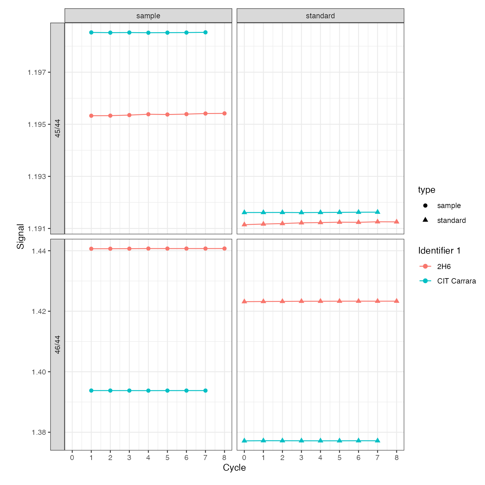
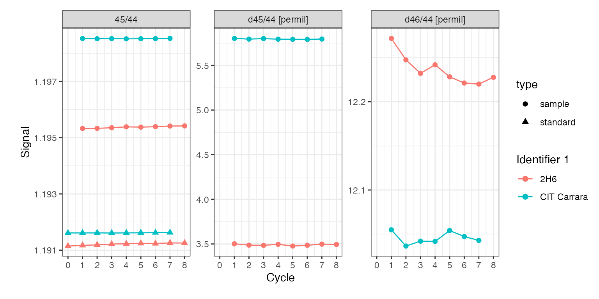
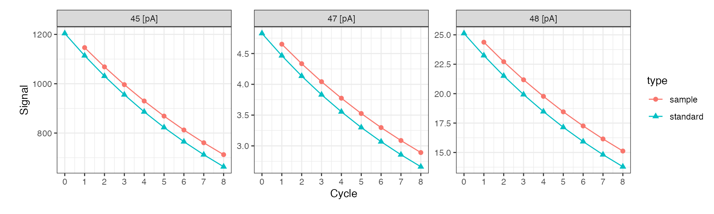

Introduction
Isoprocessor supports several plotting and data conversion functions specifically for dual inlet data. This vignette shows some of the functionality for dual inlet files read by the isoreader package (see the corresponding vignette for details on data retrieval, storage and export).
# load isoreader and isoprocessor packages
library(isoreader)
library(isoprocessor)Reading files
# read dual inlet examples provided by the isoreader package
di_files <-
iso_read_dual_inlet(
iso_get_reader_example("dual_inlet_example.did"),
iso_get_reader_example("dual_inlet_example.caf")
)
#> Info: preparing to read 2 data files (all will be cached)...
#> Info: reading file 'dual_inlet_example.did' with '.did' reader...
#> Info: reading file 'dual_inlet_example.caf' with '.caf' reader...
#> Info: finished reading 2 files in 3.84 secsVisualization
Plotting the raw data can be done either with the generic iso_plot_raw_data() function for a simple plot with default parameters, or directly using the dual inlet specific iso_plot_dual_inlet_data():
iso_plot_dual_inlet_data(di_files)
All customization options are described in the function help (?iso_plot_dual_inlet_data) and include, for example, plotting only a specific subset of masses:
# plot just masses 44 and 45
iso_plot_dual_inlet_data(
di_files,
data = c("44", "45")
)
Isotope ratios
For dual inlet applications isotope ratios calculated using the recorded ion intensities are typically of primary interest. For this purpose, isoprocessor provides a dynamic ratio calculation function (iso_calculate_ratios()) that accepts any combination of masses, here demonstrated for several different ratios. In this context, another useful customization option of the plotting function is the option to adjust plot aesthetics such as color, shape, and paneling:
di_files <-
di_files %>%
# calculate 46/44 and 45/44 ratios
iso_calculate_ratios(ratios = c("46/44", "45/44"))
#> Info: calculating ratio(s) in 2 data file(s): r46/44, r45/44
iso_plot_dual_inlet_data(
di_files,
# visualize ratios
data = c("45/44", "46/44"),
# panel the ratios vs. type (standard/sample)
panel = data ~ type,
# color by the file info stored in Identifier 1
color = `Identifier 1`
)
Deltas
In addition, isoprocessor provides a dynamic raw delta calculation function (iso_calculate_deltas()) that calculates direct or bracketed sample-standard delta values as described in the function help. See code below for a few examples:
di_files <-
di_files %>%
# calculate 46/44 and 45/44 deltas
iso_calculate_deltas(deltas = c("d46/44", "d45/44"),
bracket = TRUE, in_permil = TRUE)
#> Info: calculating delta(s) in 2 data file(s): d46/44.permil, d45/44.permil
iso_plot_dual_inlet_data(
di_files,
# visualize deltas together with one of the ratios
data = c("45/44", "d45/44", "d46/44"),
# color by the file info stored in Identifier 1
color = `Identifier 1`
)
Signal conversion
Isoprocessor can convert between different signal units. This is particularly useful for comparing data files from different mass specs that record primary signals differentally. In dual inlet applications, this is typically less important than in continuous flow because data is usually visualized as ratios right away. However, occassionally it can be of interest to examine the primary ion currents.
di_files$dual_inlet_example.caf %>%
# convert all signals to nano ampere
iso_convert_signals(to = "pA") %>%
# plot primary ion currents
iso_plot_dual_inlet_data(
data = c("45", "47", "48"),
color = type
)
#> Info: converting signals to 'pA' for 1 data file(s) with automatic resistor values from individual iso_files (if needed for conversion)
Plot styling
Since all isoprocessor plots are standard ggplot objects, they can be modified with any ggplot commands. For example to add a horizontal line (using dplyr for the calculations) and modify the themes:
library(ggplot2)
# replot
iso_plot_dual_inlet_data(
di_files,
data = "45/44",
panel = type ~ `Identifier 1`,
color = `Identifier 1`
) +
# add horizontal line indicating the averages (using a ggplot geom)
geom_hline(
data = function(df) {
df %>%
dplyr::group_by(`Identifier 1`, type, data) %>%
dplyr::summarize(value = mean(value))
},
mapping = aes(yintercept = value)) +
# modify plot styling (ggplot functionality)
theme(text = element_text(size = 20))